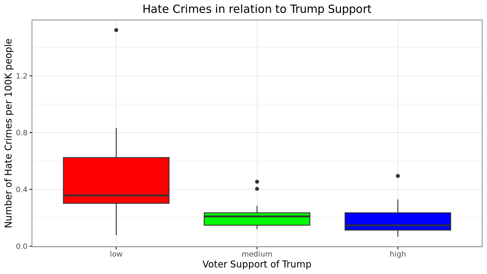

library(ggplot2)
library(dplyr)
library(moderndive)
library(readr)Problem Set 05: Regression with One Categorical Variable
Background
In this problem set, hate crimes data from the US will be used. The FiveThirtyEight article about the data appears in the Jan 23, 2017 “Higher Rates Of Hate Crimes Are Tied To Income Inequality.”
The crimes data will be used to run regression models with a single categorical predictor (explanatory) variable.
Setup
First load the necessary packages:
Next, the data is read into the object hate_crimes from where it is stored on the web using the read_csv() function.
glimpse(hate_crimes)Rows: 51
Columns: 9
$ state <chr> "New Mexico", "Maine", "New York", "Illinois", "Delaw…
$ median_house_inc <chr> "low", "low", "low", "low", "high", "high", "high", "…
$ share_pop_metro <dbl> 0.69, 0.54, 0.94, 0.90, 0.90, 1.00, 0.87, 0.86, 0.97,…
$ hs <dbl> 83, 90, 85, 86, 87, 85, 89, 90, 81, 91, 89, 89, 87, 8…
$ hate_crimes <dbl> 0.295, 0.616, 0.351, 0.195, 0.323, 0.095, 0.833, 0.67…
$ trump_support <chr> "low", "low", "low", "low", "low", "low", "low", "low…
$ unemployment <chr> "high", "low", "low", "high", "low", "high", "high", …
$ urbanization <chr> "low", "low", "high", "high", "high", "high", "high",…
$ income <dbl> 46686, 51710, 54310, 54916, 57522, 58633, 58875, 5906…Be sure ALSO to examine the data in the viewer.
Each case/row in these data is a state in the US. The response variable we will consider is hate_crimes, which is the number of hate crimes per 100k individuals in the 10 days after the 2016 US election as measured by the Southern Poverty Law Center (SPLC).
This week we will use three categorical explanatory variables in this data set:
trump_support: level of Trump support in 2016 election (low, medium or high - split into roughly equal number of cases)unemployment: level of unemployment in a state (low or high - split below or above mean)median_house_inc: median household income in the state (low or high - split below or above median)
Hate Crimes and Trump Support
Let’s start by modeling the relationship between:
\(y\):
hate_crimesper 100K individuals\(x\): Level of
trump_supportin the state:low,medium, orhigh
The Regression Equation
The regression equation for this model is the following (render the document and look at the output!)
\[ \widehat{\text{hate\_crimes}} = 0.191 + 0.2691111 \times 1_{\text{low support}}(x) + 0.0314 \times 1_{\text{med support}}(x) \]
Another notation is to use a dummy variables (\(D_1\), and \(D_2\)) and write the equation as
\[\widehat{y} = 0.191 + 0.2691111 \times D_1 + 0.0314 \times D_2\] where
\[\begin{equation*} D_1 = \begin{cases} 1 &\text{for low Trump support}\\ 0 &\text{for medium Trump support}\\ 0 &\text{for high Trump support} \end{cases} \end{equation*}\] \[\begin{equation*} D_2 = \begin{cases} 0 &\text{for low Trump support}\\ 1 &\text{for medium Trump support}\\ 0 &\text{for high Trump support} \end{cases} \end{equation*}\]So for instance, in a state in which trump_support is “low” you would plug in 1 for \(1_{\mbox{low support}}(x)\), and 0 in for \(1_{\mbox{med support}}(x)\) and solve as follows:
\[ \begin{aligned} \widehat{y} &= 0.191 + 0.2691111 \times 1 + 0.0314 \times 0 \\ \widehat{y} &= 0.191 + 0.2691111 + 0\\ \widehat{y} &= 0.4601111 \end{aligned} \]
Hate Crimes and Unemployment
We will next model the relationship between:
- \(y\):
hate_crimesper 100K individuals after the 2016 US election - \(x\): Level of unemployment in the state (
low, orhigh)
Hate Crimes and Household Income
EXTRA
Figure 1 reorders the levels of the variable trump_support using the fct_relevel() function from the forcats package then displays the data with side-by-side boxplots.
# Reordering trump_support
library(forcats)
hate_crimes <- hate_crimes %>%
mutate(trump_support = fct_relevel(trump_support,
"low", "medium", "high"))
ggplot(data = hate_crimes, aes(x = trump_support, y = hate_crimes)) +
geom_boxplot(fill = rainbow(3)) +
labs(x = "Voter Support of Trump",
y = "Number of Hate Crimes per 100K people",
title = "Hate Crimes in relation to Trump Support") +
theme_bw() +
theme(plot.title = element_text(hjust = 0.5))
Turning in Your Work
You will need to make sure you commit and push all of your changes to the github education repository where you obtained the lab.
Tip
- Make sure you render a final copy with all your changes and work.
- Look at your final html file to make sure it contains the work you expect and is formatted properly.
Logging out of the Server
There are many statistics classes and students using the Server. To keep the server running as fast as possible, it is best to sign out when you are done. To do so, follow all the same steps for closing Quarto document:
Tip
- Save all your work.
- Click on the orange button in the far right corner of the screen to quit
R - Choose don’t save for the Workspace image
- When the browser refreshes, you can click on the sign out next to your name in the top right.
- You are signed out.
sessionInfo()R version 4.2.3 (2023-03-15)
Platform: x86_64-pc-linux-gnu (64-bit)
Running under: Red Hat Enterprise Linux 9.2 (Plow)
Matrix products: default
BLAS/LAPACK: /usr/lib64/libopenblasp-r0.3.21.so
locale:
[1] LC_CTYPE=en_US.UTF-8 LC_NUMERIC=C
[3] LC_TIME=en_US.UTF-8 LC_COLLATE=en_US.UTF-8
[5] LC_MONETARY=en_US.UTF-8 LC_MESSAGES=en_US.UTF-8
[7] LC_PAPER=en_US.UTF-8 LC_NAME=C
[9] LC_ADDRESS=C LC_TELEPHONE=C
[11] LC_MEASUREMENT=en_US.UTF-8 LC_IDENTIFICATION=C
attached base packages:
[1] stats graphics grDevices utils datasets methods base
other attached packages:
[1] forcats_1.0.0 readr_2.1.4 moderndive_0.5.5 dplyr_1.1.3
[5] ggplot2_3.4.3 knitr_1.44
loaded via a namespace (and not attached):
[1] tidyselect_1.2.0 xfun_0.40 janitor_2.2.0
[4] purrr_1.0.2 operator.tools_1.6.3 snakecase_0.11.1
[7] colorspace_2.1-0 vctrs_0.6.3 generics_0.1.3
[10] htmltools_0.5.6 yaml_2.3.7 utf8_1.2.3
[13] rlang_1.1.1 pillar_1.9.0 glue_1.6.2
[16] withr_2.5.0 infer_1.0.5 bit64_4.0.5
[19] lifecycle_1.0.3 stringr_1.5.0 munsell_0.5.0
[22] gtable_0.3.4 htmlwidgets_1.6.2 evaluate_0.21
[25] labeling_0.4.3 tzdb_0.4.0 fastmap_1.1.1
[28] parallel_4.2.2 fansi_1.0.4 broom_1.0.5
[31] backports_1.4.1 scales_1.2.1 vroom_1.6.3
[34] jsonlite_1.8.7 farver_2.1.1 bit_4.0.5
[37] hms_1.1.3 digest_0.6.33 stringi_1.7.12
[40] formula.tools_1.7.1 grid_4.2.2 cli_3.6.1
[43] tools_4.2.2 magrittr_2.0.3 tibble_3.2.1
[46] crayon_1.5.2 tidyr_1.3.0 pkgconfig_2.0.3
[49] ellipsis_0.3.2 lubridate_1.9.2 timechange_0.2.0
[52] rmarkdown_2.24 rstudioapi_0.15.0 R6_2.5.1
[55] compiler_4.2.2